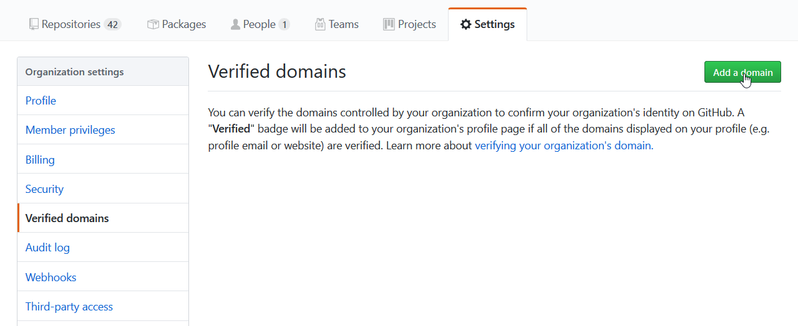
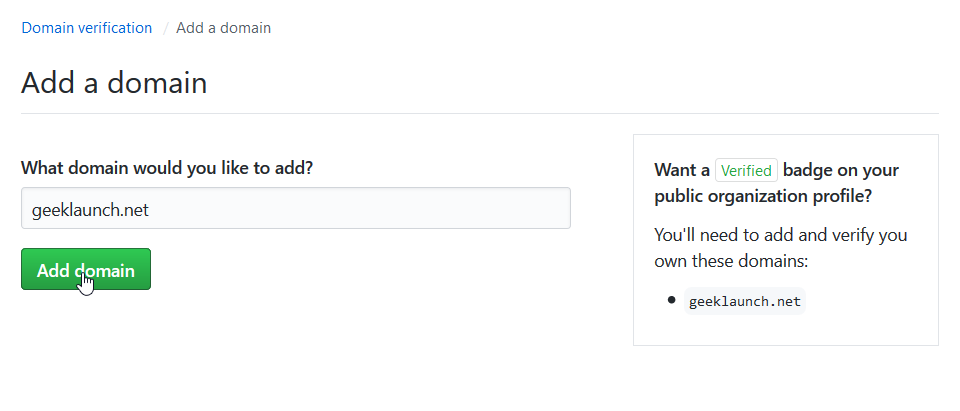
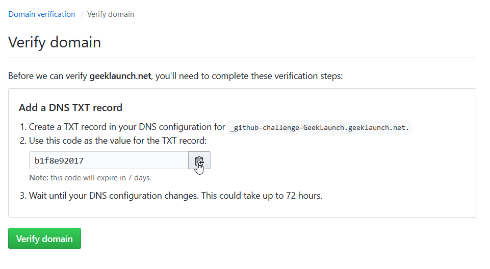
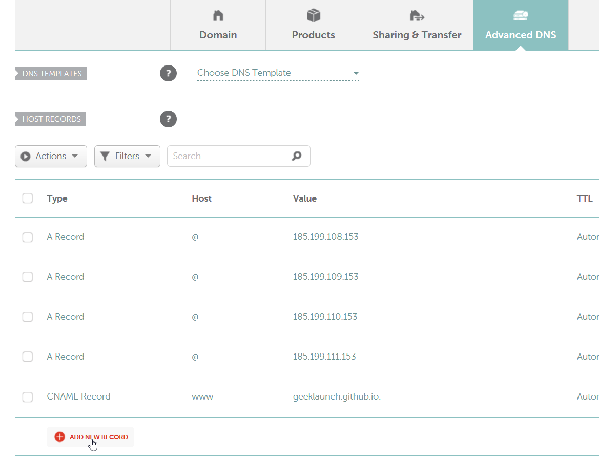
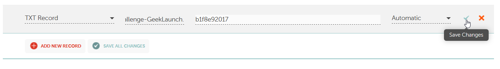
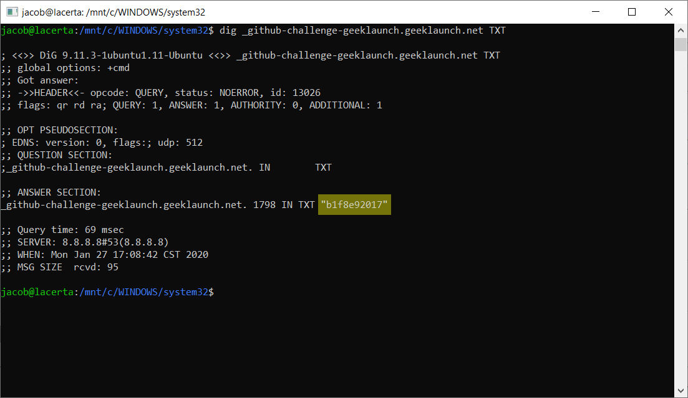
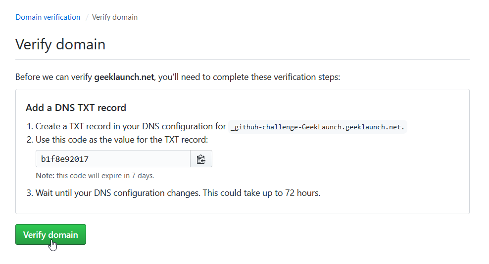
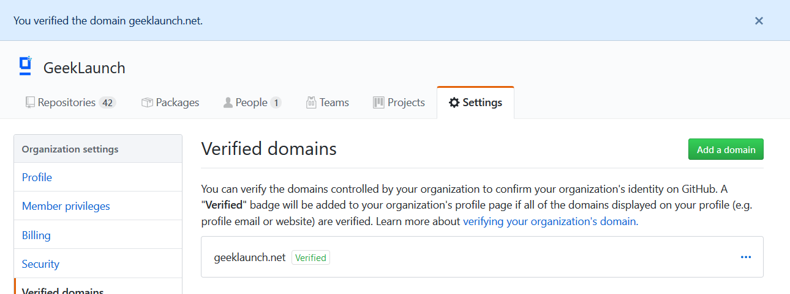

Wouldn’t it be awesome to see that little “Verified” badge next to your GitHub organization’s name? (See what I’m talking about here.)
If you’re new to domain name wrangling and DNS might as well stand for Desoxyribonukleinsäure, this is a perfect place to start.
Make sure you have these things before we get started:
- An organization on GitHub
- A domain name you’d like to associate with that organization
You must have access to the DNS records for the domain name. In this post, we’ll be going through the steps with the domain registrar Namecheap.
Step 1: Adding the domain to GitHub
Navigate to your organization’s page on GitHub, then click on the “Settings” tab, then the “Verified domains” category on the sidebar. We should arrive at a page something like this:

Enter your domain name in the text box:

Next, we’ll get a screen that looks something like this:

GitHub tells us to add a TXT record to the DNS configuration of our domain name. Don’t worry, this is just like adding a bit of public metadata to your domain. It won’t break anything.
So, how do we add this TXT record to our domain name? That’s where Namecheap comes in.
Step 2: Modifying the DNS records
Log in to your domain name registrar and find the domain that you want to verify on GitHub. You’re looking for a section that allows you to modify DNS records. It might be called something like “Advanced DNS,” “Resource Records,” or “Manage DNS.”

GitHub gave us two pieces of information that we need to add to our DNS configuration. One is the name (or host) for the TXT record. It looks something like this: _github-challenge-<organization>.<domain>.<tld>.. The second part is a code for us to put in the value field of the TXT record.
Notice that the name for the TXT record already contains our domain name at the end (and followed by another . to make it a fully qualified domain name), so we don’t need to paste the whole thing into the host field. Instead, just use the _github-challenge-<organization>. part.

This change can take some time to propagate, but often you will see the records update in a matter of minutes, depending on which DNS servers you’re using.
If you’re using a Linux operating system or if you have WSL installed on Windows, you can check the status of the DNS records using this command: dig _github-challenge-<organization>.<domain>.<tld> TXT. This will grab all of the TXT records for that host.

Once we’ve made sure that the DNS records have been updated, we can go back over to GitHub.
Step 3: Verifying the domain on GitHub
This is the easy part! Go back to the page on GitHub and click the “Verify domain” button.

You should be greeted with the following success screen:

Congratulations! Your organization’s domain is now verified on GitHub.